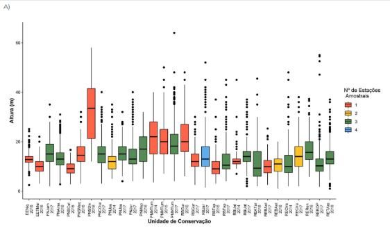
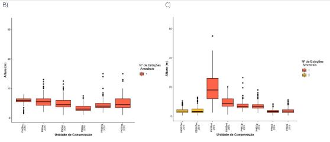
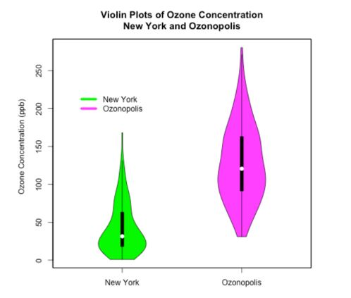

3 Plantas arbóreas e arborescentes
Alexandre Bonesso Sampaio1, Bruno Lenhaverde Sandy2, Cecília Cronemberger de Faria3, Dárlison Fernandes Carvalho de Andrade2-7, Jumara Marques Sousa2, Kátia Torres Ribeiro4 & Rafaela Campostrini Forzza5-6
Centro Nacional de Pesquisa e Conservação da Biodiversidade do Cerrado e Restauração Ecológica - CBC
Instituto Chico Mendes de Conservação da Biodiversidade – ICMBio
Parque Nacional de Brasília
Via Epia, BR-450, Km 8,5
70635-800 Brasília, DFCoordenação de Monitoramento da Biodiversidade - COMOB
Instituto Chico Mendes de Conservação da Biodiversidade – ICMBio
Complexo Administrativo EQSW 103/104 s/n
70670-350 Brasília, DFCoordenação Geral de Pesquisa e Monitoramento da Biodiversidade - COMOB
Instituto Chico Mendes de Conservação da Biodiversidade – ICMBio
Complexo Administrativo EQSW 103/104 s/n
70670-350 Brasília, DFDiretoria de Ações Socioambientais e Consolidação Territorialem UCs - DISAT Instituto Chico Mendes de Conservação da Biodiversidade – ICMBio
Complexo Administrativo EQSW 103/104 s/n
70670-350 Brasília, DFParque Nacional do Descobrimento
Instituto Chico Mendes de Conservação da Biodiversidade - ICMBio
Cumuruxatiba
45980-000 Prado, BAJardim Botânico do Rio de Janeiro – JBRJ
Rua Jardim Botânico, 1008
Jardim Botânico
22460-030 Rio de Janeiro, RJServiço Florestal Brasileiro - SBF
SCEN Lote 04 - Asa Norte
70818-900 Brasília, DF
3.1 Implementação
Para o período de 2014 a 2022 foram registradas 45 UCs federias em operação, isto é, com amostragens de plantas arbóreas e arborescentes nas cruzes de malta. Sendo 36 na Amazônia, seis no Cerrado e três na Mata Atlântica. Destas, 44 enviaram dados a tempo de compor este relatório.
Das 45 UC federais com coleta de dados de plantas, 26 (58%) já estão consolidadas, isto é, possuem pelo menos três unidades amostrais (cruzes de malta) em operação. No total, o Programa já possui 104 UAs (cruzes da malta) de plantas em operação.
Oito UCs já fizeram as remedições de 5 anos: Esec Niquiá, Parna Serra da Mocidade, Parna do Jaú, Parna do Juruena, Rebio do Jaru, Parna Montanhas do Tumucumaque, Parna do Cabo Orange e Rebio do Uatumã, sendo que as duas últimas ainda não entregaram os dados à COMOB. Quatro UCs estão com as coletas atrasadas em 1 ano (Flona Jamari, Rebio do Tapirapé, Rebio do Gurupi e Resex Ouro Preto) e três estão com atrasos maiores, consideradas como “paradas ou interrompidas” (Esec da Terra do Meio, Parna Serra da Cutia e Parna da Serra da Bocaina). Quatro UCs entraram em operação em 2022 (Esec Pirapitinga, Esec Jari, Resex Verde para Sempre e a Flona Carajás).
3.2 Resultados
3.2.1 Estrutura
Nesse quinquênio, foram monitoradas ?? plantas, especificamente ?? árvores, ?? palmeiras, ?? cipós e ?? pteridófitas arborescentes; ?? indivíduos não receberam categorização em campo (Figura x).
As análises dos dados dos quinquênios compreendidos no período de 2014-2022 consistiram de avaliações descritivas sobre a estrutura das vegetações amostradas com ênfase na altura, circunferência, área basal e biomassa.
Entre as unidades de conservação monitoradas no período de 2014 a 2022, destacam-se duas UCs localizadas no Cerrado com o maior número de árvores amostradas por área em comparação às demais UCs, as quais são o PARNA de Brasília (ano 2018 - 3.185 ± 302,93 ind./ha e ano 2014 - 2537,5 ± 995,67 ind./ha) e a ESEC Serra Geral do Tocantins (ano 2015 - 1005 ± 135,28 ind./ha). Estas foram as únicas UCs amostradas a utilizarem como critério de inclusão o CAS ≥ 15 cm, sendo, portanto, um critério menos restritivo do que aquele utilizado na Amazônia e Mata Atlântica (CAP ≥ 31 cm). Na Amazônia, as maiores densidades médias foram registradas na ESEC Niquiá (1002,5 ± 159,87 - ano 2016) e no PARNA do Jaú (755 ± 79,37 ind./ ha – ano 2014). Na Mata Atlântica, destacam-se os PARNAs do Superagui (965 ± 561,45 ind./ha – ano 2018) e da Serra da Bocaina (866,7 ± 445,94 ind./ ha – ano 2014) com as maiores densidades (Anexo Plantas)
Com exceção da ESEC Niquiá e do PARNA do Jaú, as UCs amostradas na Amazônia apresentaram baixa densidade de indivíduos quando comparadas com as demais UCs amostradas; em contrapartida, as plantas da maior parte dessas UCs apresentaram as maiores circunferências registradas e ocupam uma maior área no espaço, como indicam os elevados valores de área basal – estimativa da área de superfície do solo ocupada por uma planta. No PARNA Montanhas do Tumucumaque foram registrados, em 2015, os maiores valores de circunferência e área basal média, respectivamente: 83,14 ± 93,88 cm e 63,65 ±131,49 m²/ha; assim como na ESEC da Terra do Meio, em 2016: 75,2 ± 87,79 cm; 54,07 ± 120,52 m²/ha. Os menores valores de circunferência e área basal para a Amazônia foram registrados nas RESEX do Cazumbá-Iracema, em 2014 (59,85 ± 36,75 cm e 11,13 ± 12,41 m²/ha) e Barreiro das Antas, em 2018 (54,12 ± 23,89 cm e 13,13 ± 8,59 m²/ha).
Entre as UCs monitoradas na Mata Atlântica, os maiores valores de circunferência e área basal média foram registrados no PARNA da Serra dos Órgãos em 2014 (68,48 ± 45,44 cm e 43,48 ± 38,80 m²/ha) e os menores, em 2016, no PARNA do Superagui (60,51 ± 36,93 cm e 19,37 ± 17,43 m²/ha). Para as UCs do bioma Cerrado, nas quais o CAP foi utilizado para a realização das análises, os valores de circunferência e área basal média tenderam a ser menores do que aqueles registrados na Mata Atlântica e Amazônia, como no PARNA da Serra da Bodoquena, em 2014 (59,71 ± 32,45 cm e 25,15± 16,02 m²/ha) e no PARNA da Serra do Cipó, em 2014 (57,57 ± 33,86 cm e 12,25 ± 10,77 m²/ha). Para as demais UCs do Cerrado utilizou-se o CAS nas análises, sendo os menores valores de circunferência e área basal média registrados no PARNA de Brasília, em 2014 (25,4 ± 11,68 cm e 18,56 ± 8,12 m²/ha).
O valor de cobertura, dado pelo quociente da área basal média pelo número total de indivíduos, também corrobora a relação inversa existente entre densidade e circunferência. Assim como a área basal, a Amazônia concentra elevados valores de cobertura, seguida pela Mata Atlântica e Cerrado. Os maiores valores de cobertura foram encontrados no PARNA Montanhas do Tumucumaque em 2015 (0,125) e 2017 (0,114) e os menores, no PARNA de Brasília em 2014 e 2018 (0,006) (Anexo Plantas).
Os indivíduos amostrados no período entre 2014 e 2022 foram organizados em histogramas conforme a frequência nas classes de circunferência. Pela análise gráfica é possível observar que a maioria das UCs apresentam uma distribuição esperada para vegetações bem preservadas. Isto é, os dados das UCs se ajustam a uma curva exponencial, apresentando uma distribuição em formato de “J” invertido (ver plataforma online).
Em relação à altura, as plantas mais altas foram registradas nas UCs da Amazônia, entre elas se destaca o PARNA Montanhas do Tumucumaque, com o registro em 2017 do maior indivíduo amostrado: 64 m (Figura x). Na Mata Atlântica, a maior altura registrada foi 30 m (PARNA da Serra dos Órgãos) e no Cerrado, 55 m, no PARNA da Serra da Bodoquena (Figura x). Os dados de altura das plantas correspondem a estimativas e devem ser analisados com cautela. Esse foi um dos motivos que nos levou a excluir alguns dados de altura de alguns indivíduos em UCs do Cerrado nessa análise, pois algumas plantas cuja espécie era conhecida apresentaram valores muito acima do esperado e possivelmente são erros de amostragem.

3.2.2 Biomassa
Como o protocolo básico de plantas não prevê a identificação dos indivíduos amostrados, foram escolhidas, com auxílio de especialistas, equações gerais para estimar a biomassa das “árvores em pé” dos três biomas amostrados. A estimativa de biomassa de plantas com equações gerais é menos precisa do que aquela realizada com equações específicas para espécie; no entanto, representa um bom indicativo do papel desses organismos no ciclo do carbono.
Para o bioma Amazônia foram utilizadas duas equações, conforme [1], para estimar a biomassa fresca, dada em quilograma (kg):
Biomassa = exp (-1,754 + 2,665 Ln(DAP)) para plantas com 5 ≤ DAP <20 cm; e,
Biomassa = exp (-0,151 + 2,170 Ln(DAP)) para plantas com DAP ≥ 20 cm; onde, DAP = diâmetro à altura do peito (cm).
A equação utilizada para estimar a biomassa (kg) na Mata Atlântica foi adaptada de [2]:
- Biomassa = exp (-10,6409194002 + 2,1533324963 Ln(DAP) + 0,8248143766 Ln(H)) 1000; onde, H = altura (m).
Foi utilizada a equação de [3] para áreas de cerrado sensu stricto:
- Biomassa = -0,49129 + 0,02912(DAP²)H
Os valores obtidos pelas fórmulas citadas foram convertidos para toneladas (t), por conveniência, para melhor visualização e comparação dos dados. Entre as UCs monitoradas, aquelas localizadas no bioma Amazônia apresentaram os maiores valores de biomassa, os quais variaram de 611,82 t (PARNA Montanhas do Tumucumaque – ano 2015) a 74,74 t (PARNA Mapinguari – ano 2018) (Anexo Plantas). Os menores valores de biomassa foram encontrados nas UCs de Cerrado, a exemplo da EA-2 da ESEC Serra Geral do Tocantins, em 2015, que teve a menor estimativa de biomassa de todas as UCs monitoradas: 4,22 t. A estimativa da biomassa para a Mata Atlântica apresentou valores intermediários entre aqueles calculados para Amazônia e Cerrado, variando de 50,53 (PARNA da Serra dos Órgãos – ano 2014) a 16,24 t (PARNA do Superagui – ano 2018).
O PARNA da Serra da Bodoquena é a única unidade de conservação monitorada no bioma Cerrado em que as unidades amostrais (cruzes de malta) estão implantadas em uma floresta estacional. As cruzes das demais UCs estão em uma vegetação do tipo cerrado sensu stricto. Por conta disso, os indivíduos do PARNA da Serra da Bodoquena apresentam uma maior amplitude de altura (de 1,1 a 55 m) (Figura x) e circunferência (31 a 263 cm) em comparação às demais UCs monitoradas no Cerrado.
O PARNA da Serra do Cipó é um caso especial. Embora a vegetação da unidade amostral localizada no PARNA seja categorizada como cerrado sensu stricto, essa área sofre influência de uma mata de galeria localizada nas proximidades, o que reflete nos elevados valores de cobertura, os maiores registrados para as UCs monitoradas no Cerrado no período entre 2014 e 2018. O PARNA da Serra do Cipó apresentou valores elevados de biomassa 19,29 e 18,27 t.
Ao analisar as variáveis medidas pelo protocolo de plantas e sua variação ao longo do tempo, observamos que as áreas estudadas apresentam bom estado de conservação, que parece estar se mantendo. Porém, essa é uma impressão prematura, pois poucas UCs tiveram mais de uma amostragem ao longo do tempo. Assim, para que se tenha confiabilidade nessa informação são necessárias mais medidas das parcelas implantadas.
3.2.3 Relatório do sistema
O relatório do sistema é uma versão condensada do relatório 2, agrupando as UCs por bioma – sendo que a Amazônia pode ser apresentada em dois recortes: calha norte e calha sul. Avaliar se outros alvos estão usando outros recortes, para fazer semelhante.
Recortes:
Amazonia -calha norte
Amazonia – sul
Mata atlântica
Cerrado (checar se tem t1 p cerrado)
Para cada um dos recortes, serão apresentados 4 figuras:
Índice de Liocourt em T0 e T1 – gráfico tipo um boxplot, só que a representação gráfica é tipo uma bolha mais larga onde tem mais pontos, mais estreita onde tem menos. – violin plot – ver figura abaixo.

E outra figura mostrando quantas ucs de moveram em cada direção considerando o delta Liocourt – tipo um gráfico pirâmide – ver figura abaixo.
Biomassa em T0 e T1 – violin plot
Figura semelhante a b para biomassa.
3.2.4 Destaques
3.2.4.1 Contraste entre o Inventário Florestal Nacional e os dados do protocolo básico de plantas do componente florestal
A realização do Inventário Florestal Nacional no Brasil (IFN-BR) está prevista no novo Código Florestal1 e é coordenada pelo Serviço Florestal Brasileiro (Decreto 8.975/2017 e Resolução nº. 23 de 18 de fevereiro de 2014 que institui o Manual de Campo do IFN-BR como documento de referência nacional).
Com mais da metade do território (55%) coberto por florestas e abrigando a maior extensão de florestas tropicais do planeta, conhecer e monitorar a biodiversidade florestal é uma necessidade e um desafio para o Brasil. Desta forma, a realização do IFN-BR contribui objetivamente para:
Conhecer o estado de conservação das florestas brasileiras;
Gestão dos recursos naturais, com ênfase nos recursos florestais (incluindo a biodiversidade arbórea), cobertura, uso e mudanças da terra;
Gerar oportunidades para integrar a conservação da biodiversidade nas políticas e investimentos setoriais;
Conhecer o papel e os fatores que afetam as contribuições das florestas para o desenvolvimento sustentável dos territórios;
Gerar conhecimento e subsidiar a conservação da biodiversidade em áreas protegidas, bem como na tomada de decisões sobre o uso da terra;
Informar sobre estoques e fluxos de carbono florestal e potenciais para redução de emissões através de uma melhor utilização dos recursos florestais e das terras;
Conhecer sobre o estado de degradação do solo na paisagem florestal e potenciais de redução.
O IFN-BR é estratégico para a implementação de políticas públicas para conservação e manejo das florestas do País. O IFN-BR é um instrumento capaz de coletar, analisar e divulgar dados qualitativos e quantitativos sobre os recursos florestais – nativos e plantados, aliados a informações sociais de populações das áreas trabalhadas, possibilitando uma análise integral – ambiental e social, das paisagens florestadas do Brasil.
Com abrangência nacional e metodologia única para todos os biomas, a coleta de dados é realizada em pontos distribuídos a cada 20 km de distância por todo o país. São produzidas informações detalhadas e de forma regular sobre aspectos socioambientais e biofísicos das florestas relacionados a: (i) extensão dos recursos florestais; (ii) diversidade biológica; (iii) saúde e vitalidade; (iv) estoques; (v) funções socioambientais (uso da floresta e a percepção das populações rurais em relação à existência, uso e conservação dos recursos florestais).
O IFN-BR é a principal fonte de informações sobre a quantidade e qualidade dos recursos florestais, sendo o fundamento para políticas e programas relacionados à gestão e uso das florestas, produzindo informações que devem ser utilizadas na conservação e no uso de recursos florestais. A estratégia de implementação do IFN-BR contempla a realização de diversos ciclos para acompanhar a dinâmica de uso do solo, da floresta e seus usos.
Durante a concepção e estruturação do componente Florestal, iniciada em 2010 ([Cronemberger2023?]) houve um entendimento de que o Programa Monitora adotaria os procedimentos metodológicos do INF-BR para coleta de dados do alvo Plantas arbóreas e arborescentes.